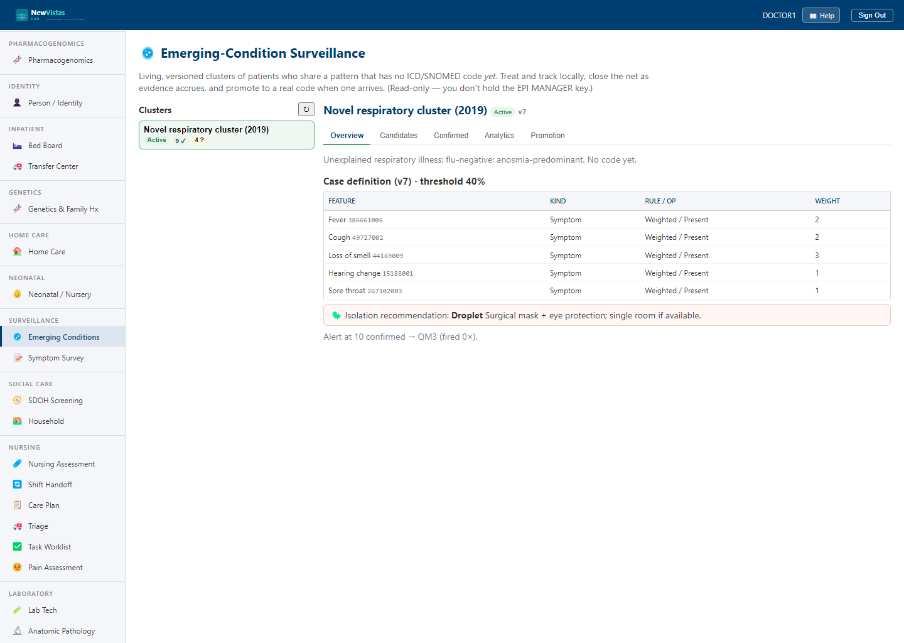

Emerging Conditions — for the provider
The Emerging Conditions dashboard (/emerging-conditions) shows the clusters your
infection-control / epidemiology team is tracking — diseases that don't have a code yet. As a
provider you can read everything (it's part of the chart) and, from the
Symptom Survey, suggest a patient into a cluster.
Editing the definition, confirming members, and promoting to a code require the
EPI MANAGER key held by the epidemiology team.

What you'll see on a patient
- If your patient is a confirmed member of an active cluster, their cover sheet carries a non-suppressible precaution banner — for example "Droplet isolation recommended (confirmed cluster member)". It's a recommendation; it never changes bed or order data on its own.
- When a cluster is eventually promoted to a real code, the coded diagnosis (e.g. U07.1) is added to the member's problem list with a citation back to the cluster, and you're notified to review/amend it.
Your part is the wide net: fill in the Symptom Survey honestly (Present /
Absent / Unknown) so the epidemiology team has real signal to work with. The heavy analysis and the
promotion decision are theirs.